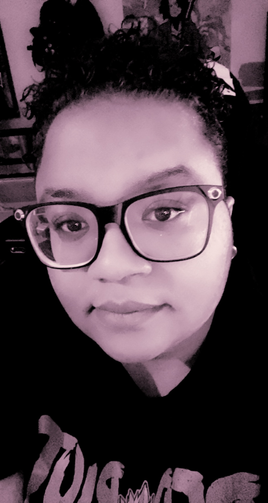
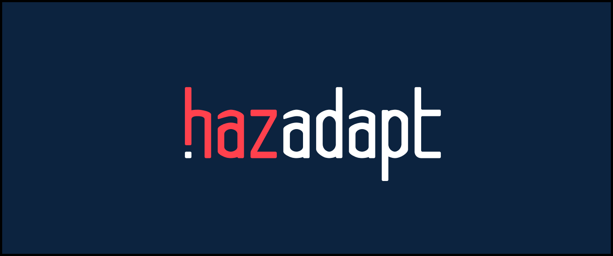
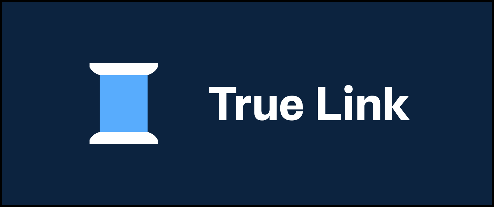
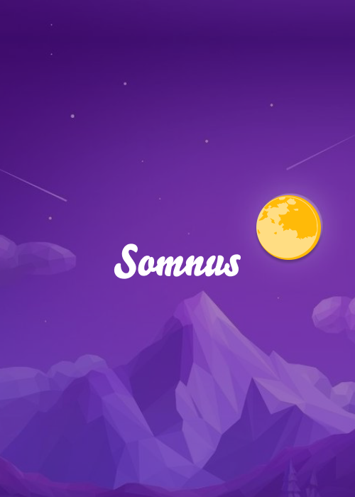
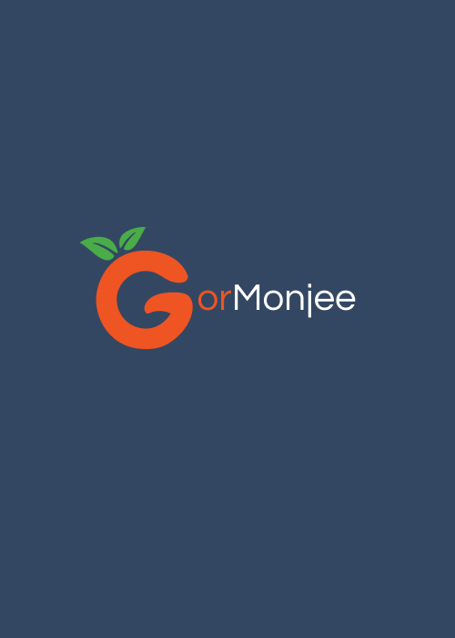
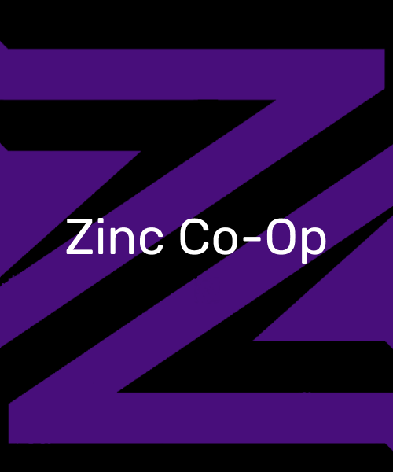
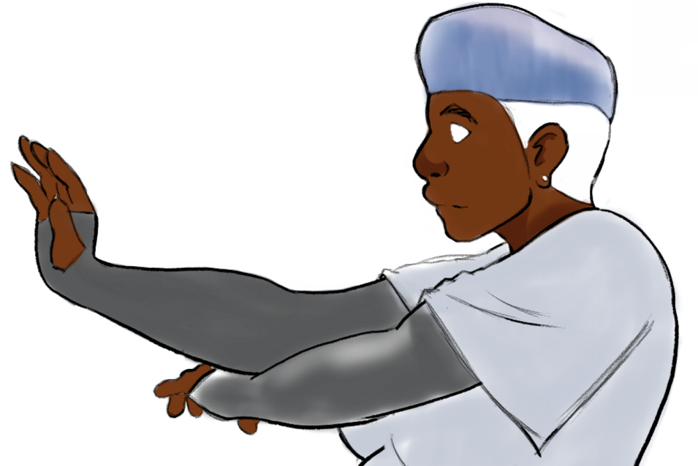
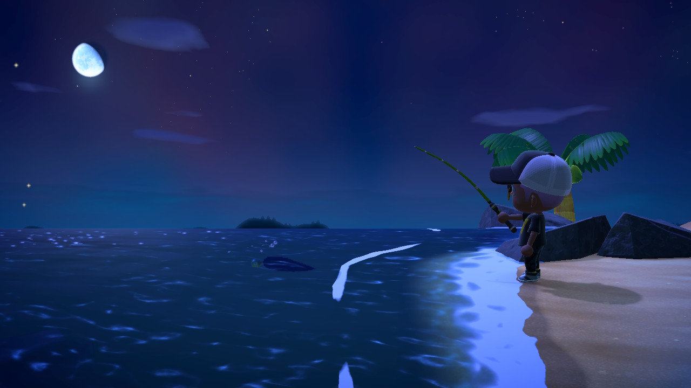

WellDone
Product Design · Field Research · Non-Profit
WellDone
Real-time visibility into water well function across developing regions — so a broken pump gets fixed in days, not months.
View in Figma →UX Designer & Developer — selected work, 2014–present
Product Design / Front-End Development / Illustration
Ten years designing and building software for people having a hard day — water crises, financial abuse, disaster prep, career pivots. Still allergic to a boring interface.

I've worked as a software developer and as a UX designer — long enough to stop pretending those are different jobs. I've designed and built humanitarian water-tracking tools used in the field, disaster-prep guides people open on their worst day, financial products meant to protect aging and disabled adults, and programs that get veterans into tech.
The pattern, if there is one: high-stakes moments, real constraints, and interfaces that have to hold up under pressure. Outside of client work, I draw — mostly things with too many teeth.
Product Design · Field Research · Non-Profit
Real-time visibility into water well function across developing regions — so a broken pump gets fixed in days, not months.
View in Figma →
UX Design · Content Strategy · Public Safety
A library of hazard guides and prep activities built to help people build resilience before a crisis hits — and recover faster after.
View in Figma →
Fintech · Accessibility · Design Systems
Financial tools built to protect the safety and independence of aging and disabled adults — without stripping away their autonomy.
View in Figma →Nonprofit · Ed-Tech · Community
Connecting veterans to tech careers — pairing education benefits with mentorship and a community that's already been where they're headed.
View Website →Also built for

A slower, quieter interface built around night skies.
Concept & Visual Design

Brand identity for a project with more personality than budget.
Branding & Identity

High-contrast identity system for a co-op that doesn't whisper.
Branding & UI

Original character and illustration work, done on my own time and my own terms. The character on this page is mine too — drawn, not licensed.
More art →
Animal Crossing: New Horizons, 2am.